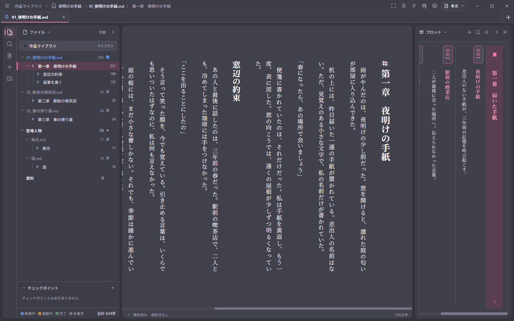

THEN / PINK THEME STUDIES
チャコールと、ピンクと、原稿。
添付の2枚をもとにした4案。現行のThenを実際に起動し、同じ原稿・同じ画面寸法で撮影しました。配色と角丸の変更だけで比較しています。

1600 × 1000 px / 実コンポーネント・実CSS / 原稿・ファイルツリー・プロットはプレビュー用の架空データ。テーマ選択画面のAplil・Blossomから選択できます。
添付の2枚をもとにした4案。現行のThenを実際に起動し、同じ原稿・同じ画面寸法で撮影しました。配色と角丸の変更だけで比較しています。

1600 × 1000 px / 実コンポーネント・実CSS / 原稿・ファイルツリー・プロットはプレビュー用の架空データ。テーマ選択画面のAplil・Blossomから選択できます。